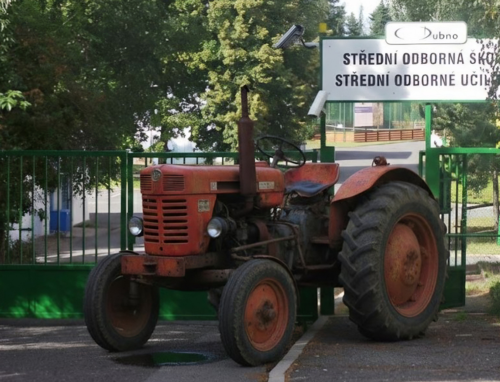

V areálu Střední odborné školy na Dubně panuje v tyto dny specifické napětí, které byste v tanečních kurzech hledali jen mírně. Místní studenti totiž mají úplně jiné priority než řešení vizuální stránky maturitního plesu. Hlavním tématem diskusí u dílen není odstín saténových šerp, ale technický stav ikonického červeného traktoru, který se stal symbolem tamního areálu. Podle očitých svědků se u stroje tvoří hloučky mladých mechaniků, kteří s odborným výrazem tipují, zda spojka zvládne nápor další sezóny, nebo zda se odporoučí do technického nebe uprostřed nejdůležitějších prací.
Tato „drsná romantika“ jen potvrzuje, že na Dubně se na pozlátko nehraje. Pro tamní studenty je zvuk zdravého motoru a pocit dobře seřízeného stroje mnohem důležitější než jakákoliv slavnostní fanfára. Zatímco zbytek města možná řeší, jestli je letos v módě vínová nebo tmavě modrá, dubenští mají jasno: dokud drží spojka, je svět v naprostém pořádku. Otázkou zůstává, zda by se traktor nemohl stát stylovým doprovodem přímo na ples – šerpu by sice nepotřeboval, ale vyleštěná kapota by mu bezpochyby slušela.